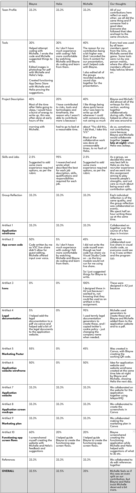
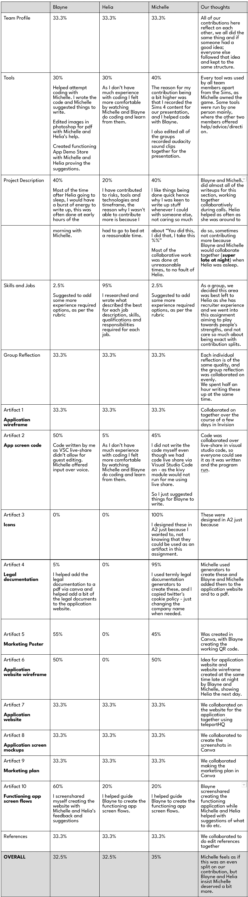

Last Men Standing
Career Plan Differences After collaborating to discuss and highlight the key
similarities and differences in our career plans, it was clear
that after our course at RMIT, our paths quickly separated in
terms of further learning and career advancement. Although we
all continued on with higher education, only Blayne and Michelle
chose to further gain certificates within their field to help
boost their skill sets. Helia decided to take an alternative
approach and train herself physically and lingually to be able
to perform her best in her ideal job. All three of us took
earlier entry roles to gain required experience towards our
ideal role.
After collaborating to discuss and highlight the key
similarities and differences in our career plans, it was clear
that after our course at RMIT, our paths quickly separated in
terms of further learning and career advancement. Although we
all continued on with higher education, only Blayne and Michelle
chose to further gain certificates within their field to help
boost their skill sets. Helia decided to take an alternative
approach and train herself physically and lingually to be able
to perform her best in her ideal job. All three of us took
earlier entry roles to gain required experience towards our
ideal role.
Both Blayne and Helia were required to dramatically relocate to achieve their ideal jobs, as it would not be viable otherwise. Blayne and Helia achieved their ideal job at around the same year, while Michelle took a couple years longer due to wanting to gain administrative experience before gaining general IT role experience.
As well as we worked together, some members ended up voluntarily completing some tasks that were not within their scope of tasks, leading to some feeling like more effort was put in on their behalf and others feeling left behind. For this assignment, we aim to discuss prior commitments and work schedules more in-depth to assign more appropriate sections to prevent some from falling behind and prevent other members from waiting around due to having more time than the rest.
We as a group have decided to care more about available time than contribution workload, meaning we would rather assign members with better-suited sections for the personal skills and time available. We are hopeful that this will lead to better quality content with less stressed members. Making sure each person is submitting 33% exactly is not how we plan to move forward with this assignment. Quality over quantity is our motto. As we get closer to the submission date we will be implementing daily check-ins so we do not leave things until the last minute like we had some members do the last assignment. As three of our members have chosen to leave the course, we aim to help each other even more than we already do in terms of check-ins, collaborations and feedback suggestions. We are confident that despite our bad luck with half of our group deciding to leave, we can accomplish what we can to the same level of depth and effort that we did during A2.


Test Results thoughts
BlayneTaking a DISC test for a second time in this assessment period was a good test of how my personality or attitude towards my group has changed. As I was doing the test I felt as though some of my responses had changed, and did in fact feel like my general attitude had also changed. The result said otherwise, as I had the same outcome as my first test 6 weeks ago, if not slightly more biased towards the Stabiliser type from the Editor type. Although the results do not indicate much of a change, I can confidently express my enjoyment that I’ve had working and socialising with my group. Beginning the group work I felt quiet and reserved toward the team, and I’m sure some recognised that. However over time I felt as though my personality gained some confidence and my attitude towards group work changed to accommodate enjoyment of relying on others and having them rely on me.
Helia
It was surprising to see how my DISC test result had changed the second time around. To be honest I knew my test result was going to be different when I noticed myself selecting different answers compared to the previous time I did the test. I think the way the group's relationship has changed since the beginning of A2 has definitely made a huge impact on me as well. In the beginning I was super lost and didn’t think I was capable of doing much but as more time went by I surprised myself on how much i was actually capable of! I’m super grateful to work along such an amazing team. We all set pretty high standards for ourselves and will help each other as much as we can to achieve the best results. ⠀⠀⠀⠀⠀⠀⠀
⠀⠀⠀⠀⠀⠀⠀⠀⠀⠀⠀⠀
Michelle
It surprised me to see that my DISC test has changed since the start of this assignment although I did notice when repeating the test that my thoughts on the questions themselves were different. I found myself answering in response to how I am with this group now, unlike at the start where I would answer as how I would be in a potential future group. I find my thoughts on group work have changed entirely throughout these assignments and I only have my amazing team mates to thank for that. We work insanely well together and the remaining three of us are super detail oriented and always pushing for “better than perfect”, it’s really nice to contribute with such like minded people. It’s our inside joke that we scared off the other three due to our commitment and dedication to being the best. I’m really happy and comfortable knowing I can rely on my teammates and I hope that they feel the same towards me too.
Group Reflection
We were all pretty excited to start A3 given how well we worked
together, aside from communication issues and meeting deadlines we
didn’t have any other concerns stepping into A3 until we were
informed by Jake that he was going to drop out of the course due
to personal issues. Jake’s announcement to leave was a shock to
all of us as he was one of the top contributors and had a big
impact on A2, but we didnt let this bring us down, we were still
pretty excited about A3, we started our planning and meetings for
A3 during this time Burak was not attending nor communicating with
all of us, so we were kind of prepared that he might also be
dropping out, as our meeting went by we were all becoming more
excited as we all came up with some pretty great ideas, but
unfortunately one day Charlie messaged our group chat and informed
us that he was dropping out of the course, not shortly after Burak
also informed us that he is also dropping out, so within a week we
lost 3 members and became a 3 member group trying to an assignment
that should be done by at least 4 people. We felt quite
overwhelmed by the amount of work that needed to be done, but with
those members dropping out all of our concerns regarding
communication and meeting deadlines was solved. Those 3 members
dropping out was a big shock to us as we thought we all worked
pretty well together and collectively were excited for A3 but life
gets in the way and everyone has their own matters to tend to. It
all worked out great in the end as Michelle, Blayne and Helia have
had a blast working on A3 together.
In the initial weeks of A3, with Jake having dropped from the group, Charlie, Blayne, Helia and Michelle worked hard to plan out the project as a whole. The idea for the presentation involved a self animated skit involving Blayne presenting his application idea alongside Jake, an imaginary friend, in front of a panel of judges. After the sudden withdrawal of both Charlie and Burak, the remaining group kept this idea as the lead. After some thought and a few weeks of not having made much progress, the idea was scrapped in favour of a different form of visual presentation, and slightly different story.
This new presentation idea involved Blayne presenting his application to two podcast hosts alongside a famous business owner. This was to be animated using the Sims 4, and matching up the voiceovers with character movements. This was deemed to be an easier alternative, while still delivering an informative and engaging piece of content.
With this presentation, as Michelle owned the Sims 4, she took to creating the characters with the guidance of Blayne and Helia. Michelle also created the podcast area, and proceeded with the animation of the characters to match up with the podcast voiceover. The voice overs were contributed to by the whole team, with each person voicing themselves. Helia recorded an extra piece in the form of ‘aggressive marketing’ herself.
Michelle and Blayne mostly kept the notes Google doc up to date, with Helia adding sometimes - we used this document during our meetings too as we screenshared it for the recording so that it helped our marker grasp the context of the things that we were saying. All meetings were attended by all three of the members, with everyone happy to push meetings back to suit timelines if needed. There were no issues during meetings, no issues about meetings. Everything went smoothly.
Like A2, we stuck to two scheduled meetings a week with the allowance of any informal ones as we please. However, we also added a rule that towards the end of the assignment we would start having daily meetings to help keep each other sticking to deadlines, however once the other three dropped out we didn’t need to actually do this rule as us three stuck to our deadlines quite well to be honest. We had almost weekly informal meetings where we smashed out a ton of the project collaboratively. This was pretty much how the entire assignment was done and it worked insanely well for us. Even just sitting in silence as we all typed our assigned sections for the content we were working on for that day, it was nice to be able to talk about thoughts and create better content because you have other people to bounce your ideas off of in real time. Our meetings this time were short most times because we speak so often outside of our recorded meetings that there isn’t really a lot that we don’t already know during the recorded sessions. Which, for an outsider just looking at the recordings can seem like we aren’t contributing or working well together, however it's quite literally the opposite. Everything was done when expected, as expected and was always up to the high standards that we expected from each other. It’s been really nice to have a group of people who think alike and want to achieve the best and not just go for something that is ‘good enough.’
Michelle and Blayne went over the rubric quite often to make sure that all of our content was on par with what was required of us. We also did this last assignment too and this definitely helped contribute to our high marking.
 In the above table, we have chosen to speak about the reason why our percentages are different or the things that we didn’t contribute as much / at all to, meaning that everything not said means that we 100% collaborated together on.
In the initial weeks of A3, with Jake having dropped from the group, Charlie, Blayne, Helia and Michelle worked hard to plan out the project as a whole. The idea for the presentation involved a self animated skit involving Blayne presenting his application idea alongside Jake, an imaginary friend, in front of a panel of judges. After the sudden withdrawal of both Charlie and Burak, the remaining group kept this idea as the lead. After some thought and a few weeks of not having made much progress, the idea was scrapped in favour of a different form of visual presentation, and slightly different story.
This new presentation idea involved Blayne presenting his application to two podcast hosts alongside a famous business owner. This was to be animated using the Sims 4, and matching up the voiceovers with character movements. This was deemed to be an easier alternative, while still delivering an informative and engaging piece of content.
With this presentation, as Michelle owned the Sims 4, she took to creating the characters with the guidance of Blayne and Helia. Michelle also created the podcast area, and proceeded with the animation of the characters to match up with the podcast voiceover. The voice overs were contributed to by the whole team, with each person voicing themselves. Helia recorded an extra piece in the form of ‘aggressive marketing’ herself.
Michelle and Blayne mostly kept the notes Google doc up to date, with Helia adding sometimes - we used this document during our meetings too as we screenshared it for the recording so that it helped our marker grasp the context of the things that we were saying. All meetings were attended by all three of the members, with everyone happy to push meetings back to suit timelines if needed. There were no issues during meetings, no issues about meetings. Everything went smoothly.
Like A2, we stuck to two scheduled meetings a week with the allowance of any informal ones as we please. However, we also added a rule that towards the end of the assignment we would start having daily meetings to help keep each other sticking to deadlines, however once the other three dropped out we didn’t need to actually do this rule as us three stuck to our deadlines quite well to be honest. We had almost weekly informal meetings where we smashed out a ton of the project collaboratively. This was pretty much how the entire assignment was done and it worked insanely well for us. Even just sitting in silence as we all typed our assigned sections for the content we were working on for that day, it was nice to be able to talk about thoughts and create better content because you have other people to bounce your ideas off of in real time. Our meetings this time were short most times because we speak so often outside of our recorded meetings that there isn’t really a lot that we don’t already know during the recorded sessions. Which, for an outsider just looking at the recordings can seem like we aren’t contributing or working well together, however it's quite literally the opposite. Everything was done when expected, as expected and was always up to the high standards that we expected from each other. It’s been really nice to have a group of people who think alike and want to achieve the best and not just go for something that is ‘good enough.’
Michelle and Blayne went over the rubric quite often to make sure that all of our content was on par with what was required of us. We also did this last assignment too and this definitely helped contribute to our high marking.
 In the above table, we have chosen to speak about the reason why our percentages are different or the things that we didn’t contribute as much / at all to, meaning that everything not said means that we 100% collaborated together on.